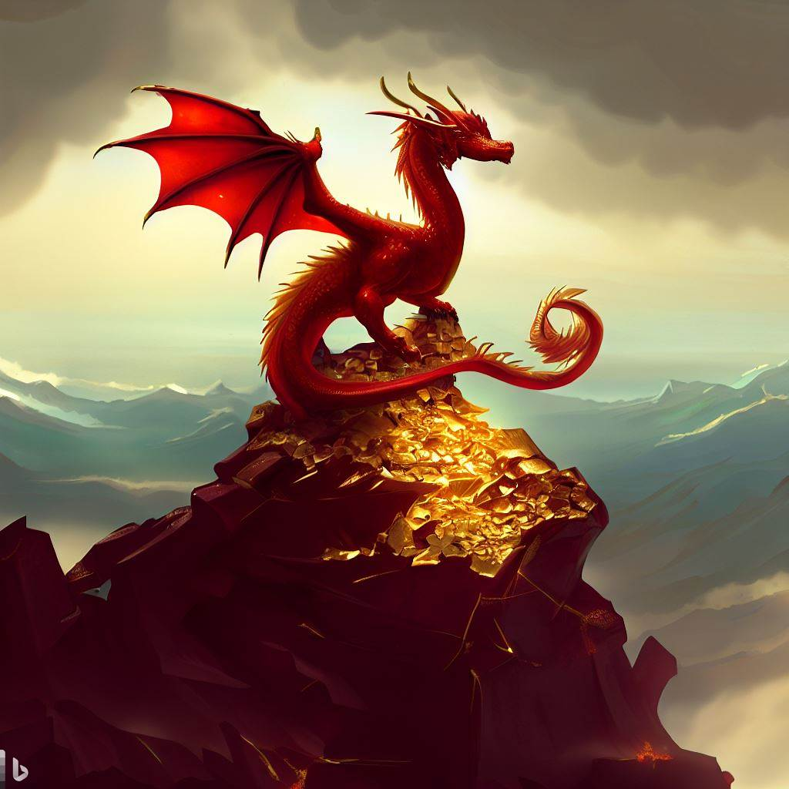
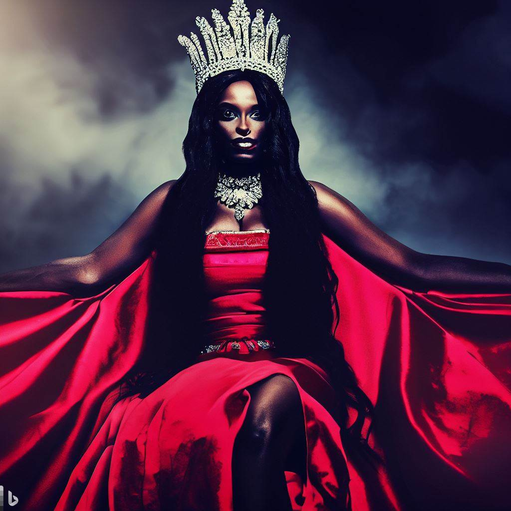
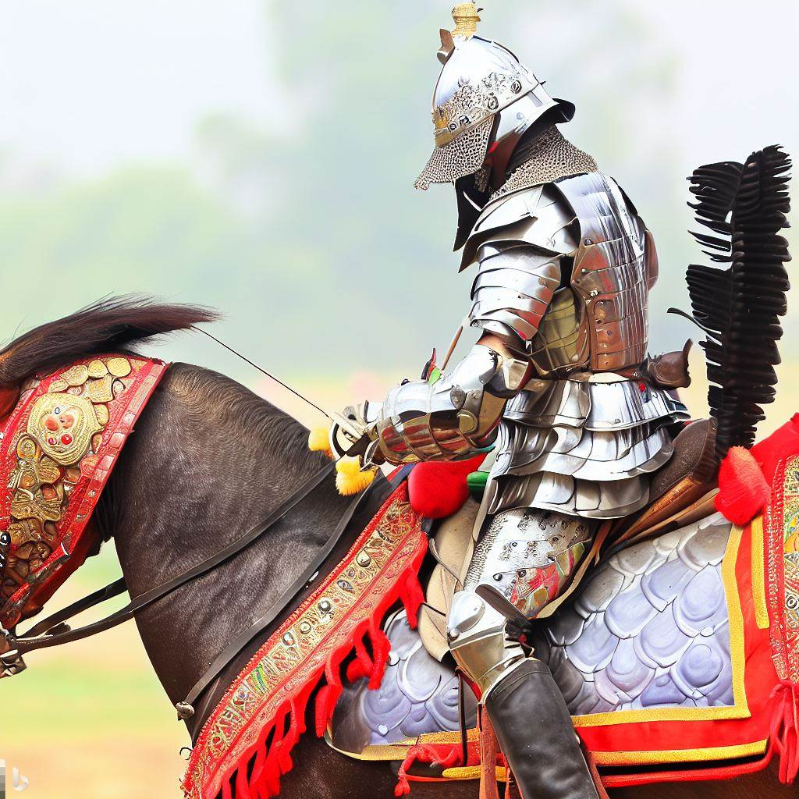
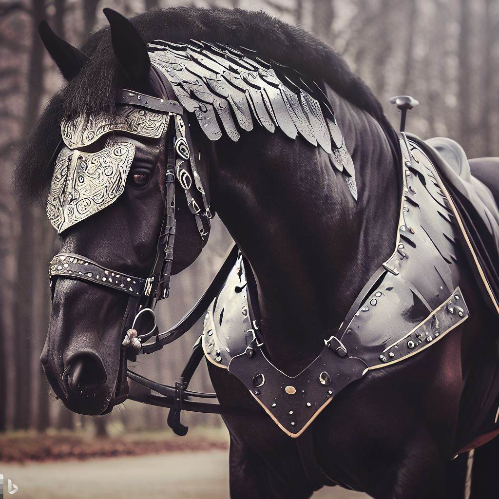
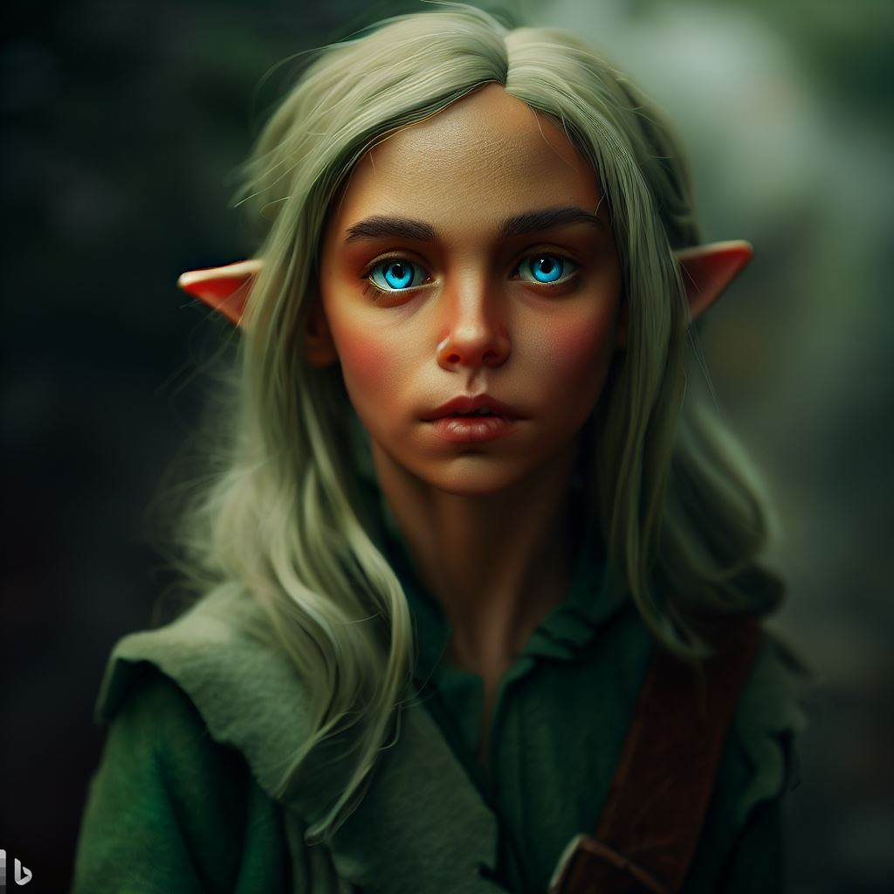
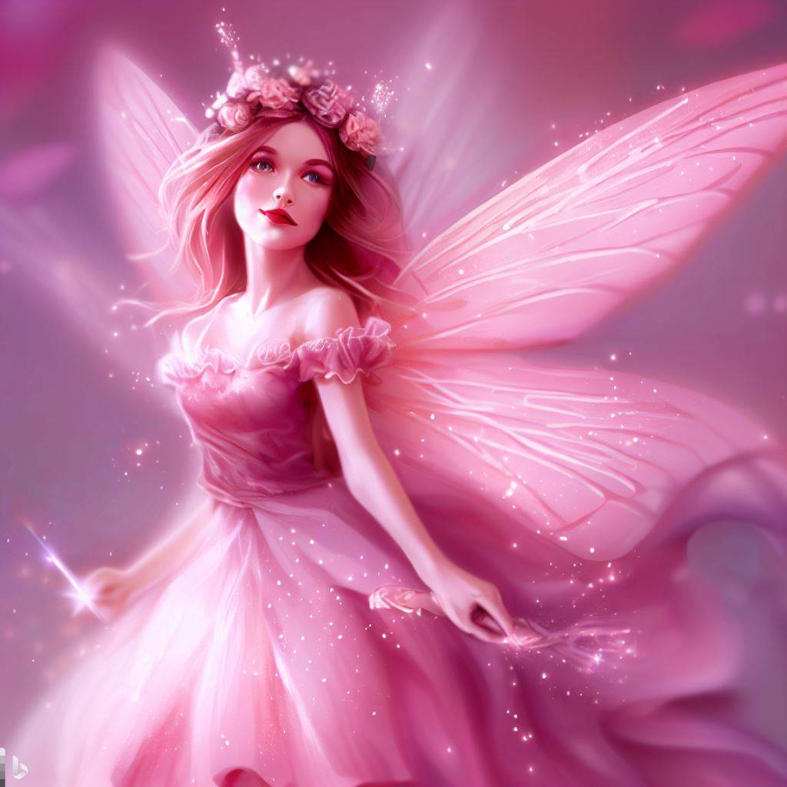
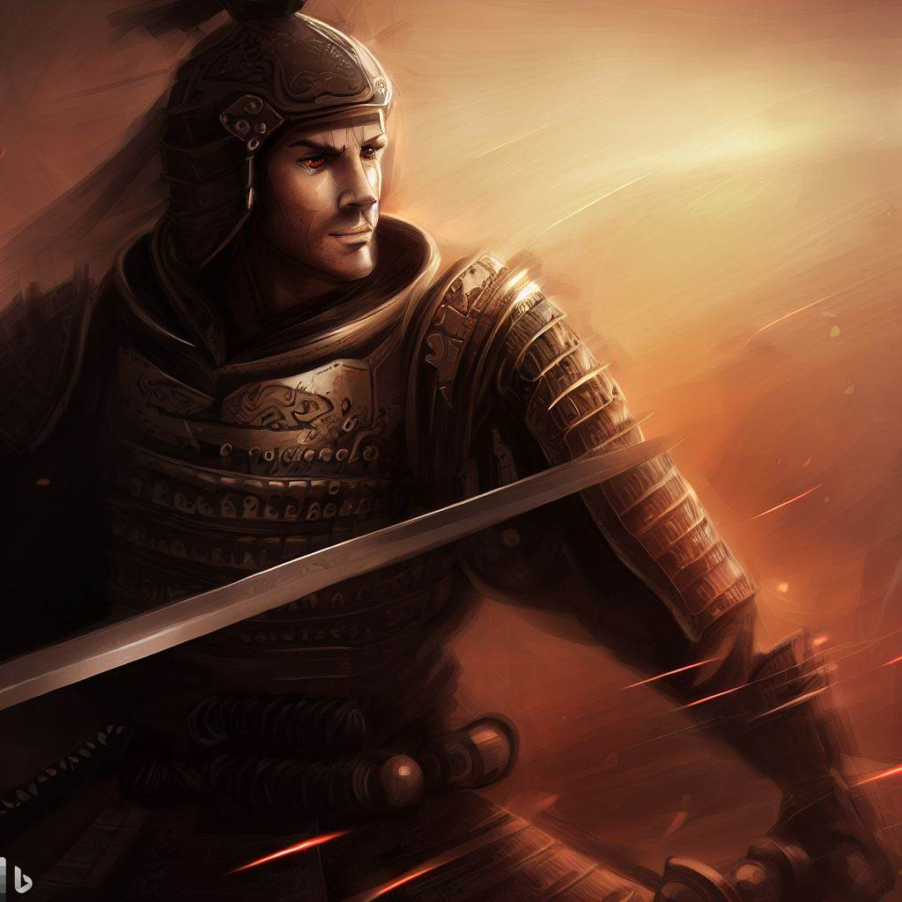
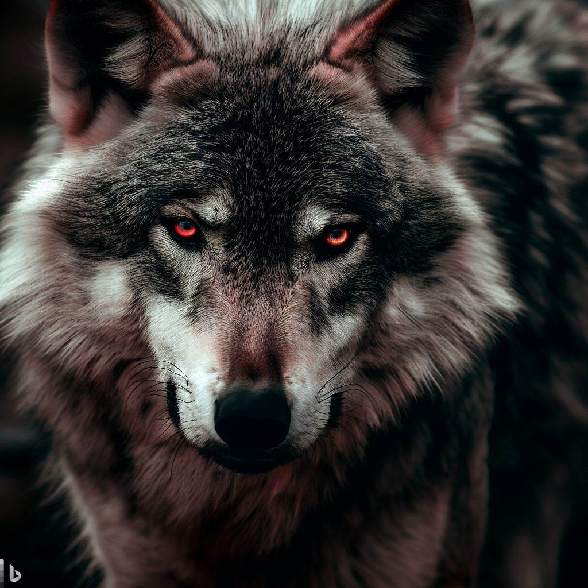
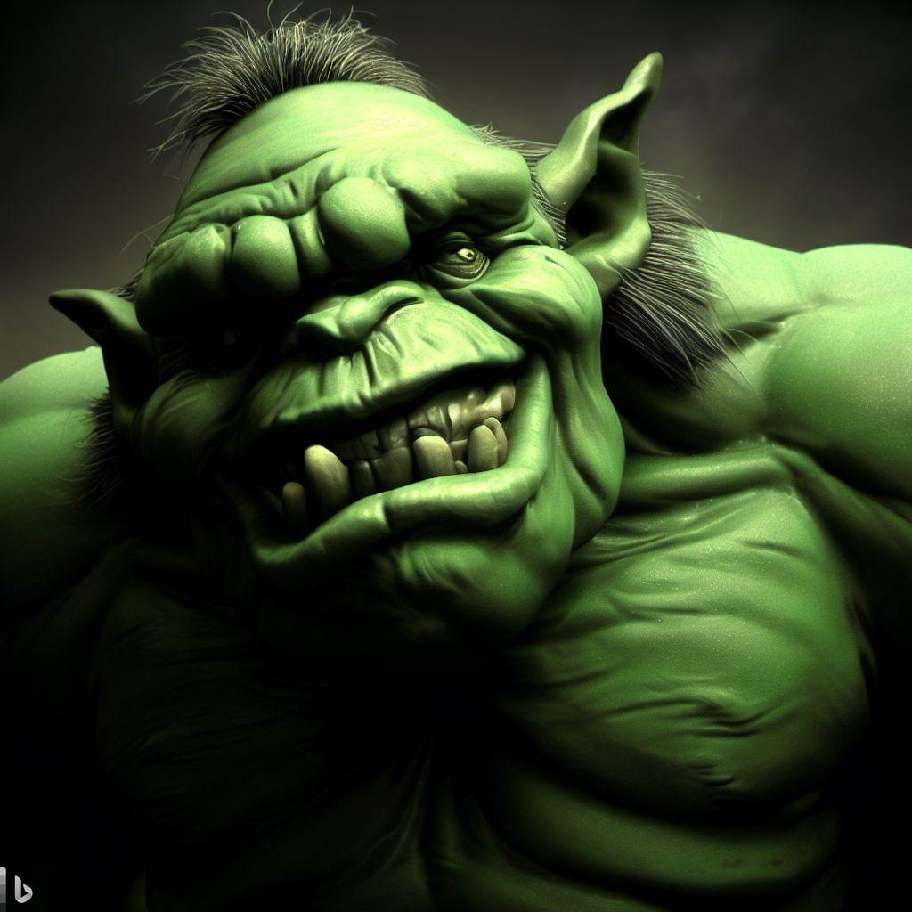
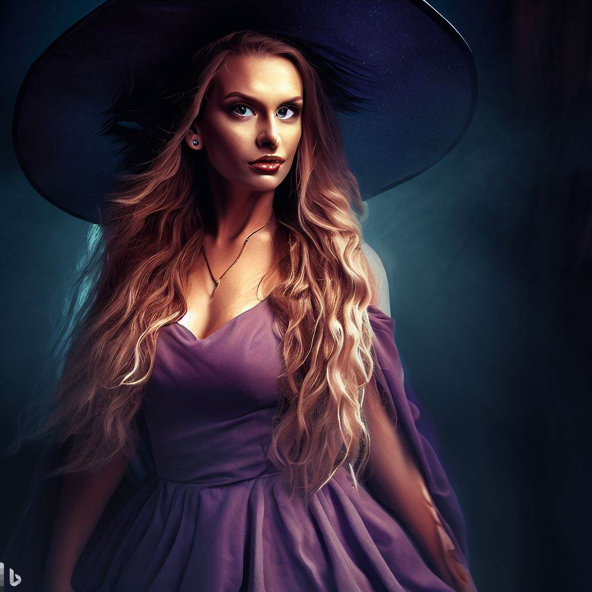

Pyraxis, O Devorador de Chamas

"Nunca subestime o poder de um dragão vermelho, pois somos os senhores do fogo e do caos!"
Pyraxis era um dragão vermelho solitário que vagava pelas montanhas em busca de um propósito. Cansado de viver sozinho, ele decidiu voar em busca de novas aventuras. Em sua jornada, encontrou um grupo de aventureiros que precisavam de sua ajuda para derrotar um temível vilão que aterrorizava o reino. Pyraxis relutou no início, mas a promessa de uma grande recompensa o convenceu a se juntar à equipe. Juntos, eles enfrentaram muitos desafios e inimigos até que finalmente chegaram à fortaleza do vilão. Pyraxis soltou um rugido ensurdecedor e lançou seu fogo mortal contra o inimigo. A batalha foi longa e feroz, mas graças à coragem e habilidade do dragão, o vilão foi derrotado. Os aventureiros honraram sua promessa e recompensaram Pyraxis generosamente. Finalmente, Pyraxis percebeu que sua verdadeira missão era ajudar aqueles que precisavam de sua ajuda e decidiu ficar com o grupo, tornando-se um herói lendário nas terras do reino.
Amina, a Soberana Carmesim.

"Com sangue real correndo nas veias, governarei com justiça e sabedoria, protegendo meu povo até o fim dos meus dias."
Amina, a Soberana Carmesim, nasceu em uma família nobre e desde jovem mostrou habilidade na luta e inteligência aguçada. Quando seu pai morreu, ela se tornou a herdeira do trono e começou a treinar ainda mais duro para governar um dia. Amada por seu povo por sua coragem e liderança, Amina tornou-se rainha e governou com justiça e sabedoria até o fim dos seus dias.
Alexander, o Destemido.

"Com honra e bravura, defenderei a verdade e lutarei pela justiça, mesmo que seja contra as maiores adversidades."
Alexander, o Destemido, nasceu em uma família nobre de cavaleiros e desde jovem mostrou uma grande habilidade na luta com espadas e na equitação. Quando seu reino foi ameaçado por invasores, ele prontamente se juntou à defesa e liderou seu exército à vitória, recebendo muitos louvores. Ele se tornou conhecido por sua honra e bravura em batalha, e por sua busca incansável pela verdade e justiça. Alexander sempre defendeu os mais fracos e nunca hesitou em confrontar os poderosos, mesmo que isso significasse colocar sua própria vida em risco. Sua habilidade como cavaleiro e sua liderança valente o fizeram ser respeitado e amado pelo seu povo, e ele se tornou um dos grandes heróis do seu reino. Até o fim de seus dias, Alexander continuou a lutar pelos ideais em que acreditava, deixando para trás um legado de coragem e lealdade.
Trovão, o Indomável.

"Com minha força implacável e coração valente, galoparei rumo à grandeza e superarei qualquer desafio que a vida me apresentar."
Trovão, o Indomável, nasceu em uma manhã ensolarada em um estábulo nobre. Desde jovem, ele mostrou uma força extraordinária e uma disposição corajosa. Quando foi domado, Trovão provou ser um dos cavalos mais rápidos e resistentes do estábulo, rapidamente se tornando o favorito dos cavaleiros. Ele era famoso por sua lealdade inabalável e pela sua destreza na batalha. Com um relincho poderoso e uma postura majestosa, Trovão inspirava temor em seus inimigos e encantava seus aliados. Trovão acompanhou seus cavaleiros em muitas batalhas, nunca recuando diante do perigo e sempre superando seus limites físicos e mentais. Sua força e coragem eram incomparáveis, e ele rapidamente se tornou uma lenda entre os cavaleiros do reino. Até o fim de seus dias, Trovão continuou a galopar pelas planícies com a mesma energia e entusiasmo de quando era jovem, deixando para trás um legado de bravura e determinação.
Zephyr, o Veloz.

"Com minha agilidade e astúcia, navegarei por entre as sombras e surpreenderei meus adversários, tornando-me o terror dos inimigos da floresta."
Zephyr, o Veloz, nasceu na floresta encantada, onde seu povo vivia em harmonia com a natureza. Desde jovem, ele mostrou uma agilidade e astúcia excepcionais, conseguindo se mover silenciosamente entre as árvores e se esquivar de seus inimigos. Quando a floresta foi ameaçada por um exército de trolls, Zephyr prontamente se juntou à resistência, usando suas habilidades para sabotar o avanço inimigo e ajudar seus aliados. Sua destreza e coragem inspiraram seus companheiros a continuarem lutando, e juntos eles conseguiram derrotar os trolls e salvar sua casa. Depois da vitória, Zephyr se tornou um herói em sua comunidade, sendo reconhecido por sua astúcia e determinação. Ele continuou a proteger a floresta dos perigos que surgiam, sempre agindo com rapidez e eficiência. Ao longo dos anos, Zephyr se tornou um símbolo da força e resiliência do seu povo, e seu nome se tornou lendário entre as criaturas da floresta. Ele passou seus conhecimentos para as gerações futuras, garantindo que a tradição de proteger e preservar a natureza nunca fosse esquecida.
Rosália, a Encantadora.

"Com minha luz cor de rosa e minha magia delicada, espalharei amor e alegria por onde quer que eu voe."
Rosália, a Encantadora, nasceu nas terras encantadas, onde as fadas viviam em harmonia com a natureza. Desde jovem, ela mostrou um talento excepcional para a magia cor de rosa, que era conhecida por sua capacidade de inspirar amor e alegria. Quando a escuridão ameaçou tomar conta da terra das fadas, Rosália prontamente se juntou à luta contra as forças das trevas. Com sua luz cor de rosa e sua magia delicada, ela espalhou esperança e determinação entre seus companheiros de batalha, que lutaram com renovada energia e coragem. Graças aos seus esforços, as fadas conseguiram derrotar as forças das trevas e restaurar a paz em sua terra natal. Depois da vitória, Rosália se tornou uma heroína entre seu povo, sendo reverenciada por sua beleza, sabedoria e bondade. Ao longo dos anos, Rosália continuou a espalhar amor e alegria por onde quer que ela voasse, usando sua magia para curar os corações partidos e trazer sorrisos aos rostos das pessoas. Ela se tornou um símbolo da força e coragem que podem ser encontrados na bondade e no amor, e seu legado durou por muitas gerações de fadas.
Axl, o Destemido.

"Com minha espada em punho e minha determinação inabalável, enfrentarei qualquer adversário que ouse me desafiar, protegendo meu povo até o último suspiro."
Axl, o Destemido, nasceu em uma pequena aldeia em um reino atormentado por guerras. Desde jovem, ele mostrou um talento natural para a luta e a estratégia militar. Seu pai, que era um antigo soldado, ensinou-lhe tudo o que sabia, treinando-o diariamente em técnicas de combate e liderança. Quando a aldeia de Axl foi atacada por uma horda de bárbaros, ele prontamente liderou a defesa, usando suas habilidades para combater os invasores e proteger seus compatriotas. Sua coragem e determinação inspiraram seus companheiros de batalha a lutar com mais empenho e, juntos, eles conseguiram repelir o ataque inimigo. Depois da vitória, Axl se tornou um líder entre seu povo, sendo reconhecido por sua habilidade na batalha e seu compromisso em proteger os fracos e oprimidos. Ele liderou várias campanhas militares em defesa de sua terra natal, sempre agindo com coragem e determinação. Ao longo dos anos, Axl se tornou um símbolo da força e resiliência de seu povo, e sua fama se espalhou por todo o reino. Ele continuou a liderar batalhas em defesa de sua terra natal até o fim de seus dias, sendo reverenciado como um herói entre seus compatriotas.
Sombra Vermelha.

"Minhas presas podem ser afiadas e meus olhos podem ser vermelhos como o sangue, mas não subestime minha lealdade e astúcia na proteção de minha matilha."
Sombra Vermelha, um lobo de olhos vermelhos, nasceu em uma alcateia nas montanhas, em um território isolado e repleto de perigos. Desde filhote, mostrou-se um animal astuto e corajoso, sendo sempre o primeiro a explorar novos territórios e caçar presas maiores. Com o passar do tempo, Sombra Vermelha tornou-se um dos líderes da matilha, sendo respeitado e temido por seus companheiros. Ele liderou a alcateia em várias batalhas contra outros predadores, incluindo ursos e pumas, sempre mostrando-se um guerreiro implacável e habilidoso. Em uma dessas batalhas, Sombra Vermelha enfrentou um grande urso sozinho, sendo ferido gravemente. Mesmo assim, ele continuou lutando, usando toda sua força e coragem para proteger sua matilha. Seus companheiros, inspirados por sua bravura, uniram-se à luta e conseguiram vencer o urso. Depois desse episódio, Sombra Vermelha foi ainda mais respeitado e admirado pela alcateia. Ele continuou liderando seus companheiros, defendendo seu território com unhas e dentes e criando uma família forte e unida. Sombra Vermelha viveu até uma idade avançada, mas nunca perdeu sua astúcia e determinação. Mesmo quando sua visão começou a falhar, ele ainda liderava a alcateia com sabedoria e coragem. Quando finalmente faleceu, seus companheiros fizeram uma grande cerimônia em sua honra, reconhecendo-o como um dos maiores líderes que a alcateia já teve.
Grimgor.

"Não se meta comigo, pois sou Grimgor, o troll gigante verde, e minha força é capaz de destruir tudo que estiver em meu caminho."
Grimgor era um troll gigante, de pele verde e musculosa. Ele vivia nas profundezas das montanhas, longe dos humanos e outras criaturas. Grimgor era temido por todos que sabiam de sua existência, pois ele era conhecido por atacar vilarejos e destruir tudo em seu caminho. No entanto, Grimgor não era malvado por natureza. Ele agia assim porque os humanos sempre invadiam seu território, matavam sua comida e tentavam caçá-lo. Grimgor só queria ser deixado em paz. Certo dia, uma menina se perdeu nas montanhas e acabou encontrando o território de Grimgor. Ele estava prestes a atacá-la, mas a menina o olhou nos olhos e disse que não queria fazer mal a ele. Grimgor ficou surpreso, pois nunca havia encontrado um humano que não o atacasse. A menina contou sua história, disse que estava perdida e pediu ajuda. Grimgor, que nunca havia ajudado um humano antes, ficou em dúvida. Mas a menina olhou para ele com olhos sinceros e disse que confiava nele. Grimgor ficou tocado com a inocência da menina e decidiu ajudá-la. Ele guiou a menina pelo território das montanhas, protegendo-a de perigos e caçando para alimentá-la. A menina ficou muito grata e disse que Grimgor não era um monstro, mas sim um herói. Depois de ajudar a menina a encontrar o caminho de volta para casa, Grimgor sentiu-se diferente. Ele percebeu que não precisava atacar humanos para se defender. Desde então, ele passou a viver em paz, evitando conflitos com humanos e outras criaturas. A menina contou sua história e como Grimgor a ajudou, e muitos passaram a vê-lo como um ser de coração bom, e não mais como um monstro sanguinário.
Valentin.
"Meus olhos cinzentos refletem minha alma fria e sem vida. Cuidado ao cruzar meu caminho, pois sou Valentin, o vampiro impiedoso que não hesita em tirar a vida de quem se aproxima demais."
Valentin era um vampiro solitário que vivia em um castelo sombrio no alto de uma montanha. Ele se alimentava de animais para evitar a tentação de atacar humanos. Certo dia, uma jovem chamada Sofia bateu à sua porta, pedindo abrigo durante uma tempestade. Valentin a deixou entrar, e eles conversaram até o amanhecer. A partir desse dia, Sofia começou a visitá-lo regularmente, e eles se tornaram amigos próximos. Valentin até decidiu contar a ela sobre sua verdadeira natureza. Mas um dia, um grupo de caçadores de vampiros descobriu sua localização e invadiu o castelo. Valentin lutou bravamente para proteger Sofia, mas acabou sendo mortalmente ferido. Nos seus últimos momentos, ele transformou Sofia em uma vampira para salvá-la. Desde então, Sofia e Valentin têm viajado pelo mundo juntos, procurando aventuras e enfrentando seus inimigos juntos.
Lorena.

"Minha beleza loira pode enganar muitos, mas não se engane, pois eu sou Lorena, a bruxa poderosa que domina a arte da magia negra."
Lorena era uma bruxa loira que viveu durante a Idade Média. Ela foi acusada de praticar magia negra e foi julgada por um tribunal da Inquisição. Acreditando em sua inocência, ela rejeitou as acusações e se recusou a confessar qualquer coisa. Como resultado, ela foi torturada e levada à forca. No entanto, antes de sua execução, ela lançou uma maldição sobre os membros do tribunal, dizendo que eles sofreriam uma morte dolorosa. E assim, um por um, eles morreram de forma trágica e inexplicável. Isso deixou as pessoas aterrorizadas, e a lenda da bruxa Lorena cresceu. Dizem que seu espírito ainda percorre a terra, amaldiçoando todos aqueles que a julgaram injustamente. Alguns dizem que ainda é possível invocar o espírito de Lorena durante a noite, e ela concederá desejos em troca de sacrifícios humanos.